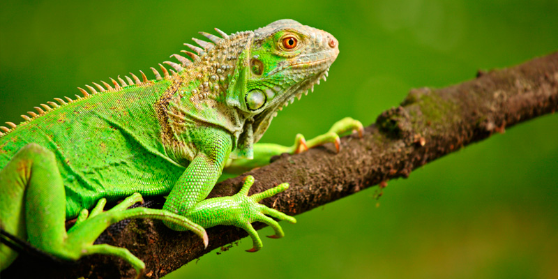
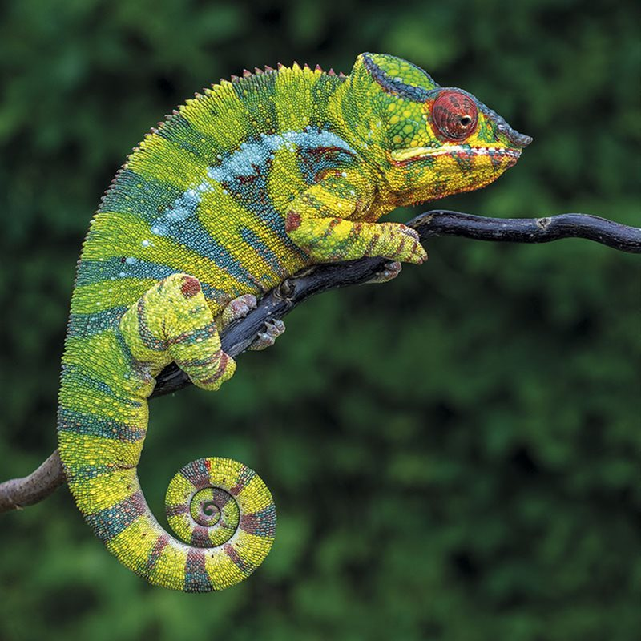
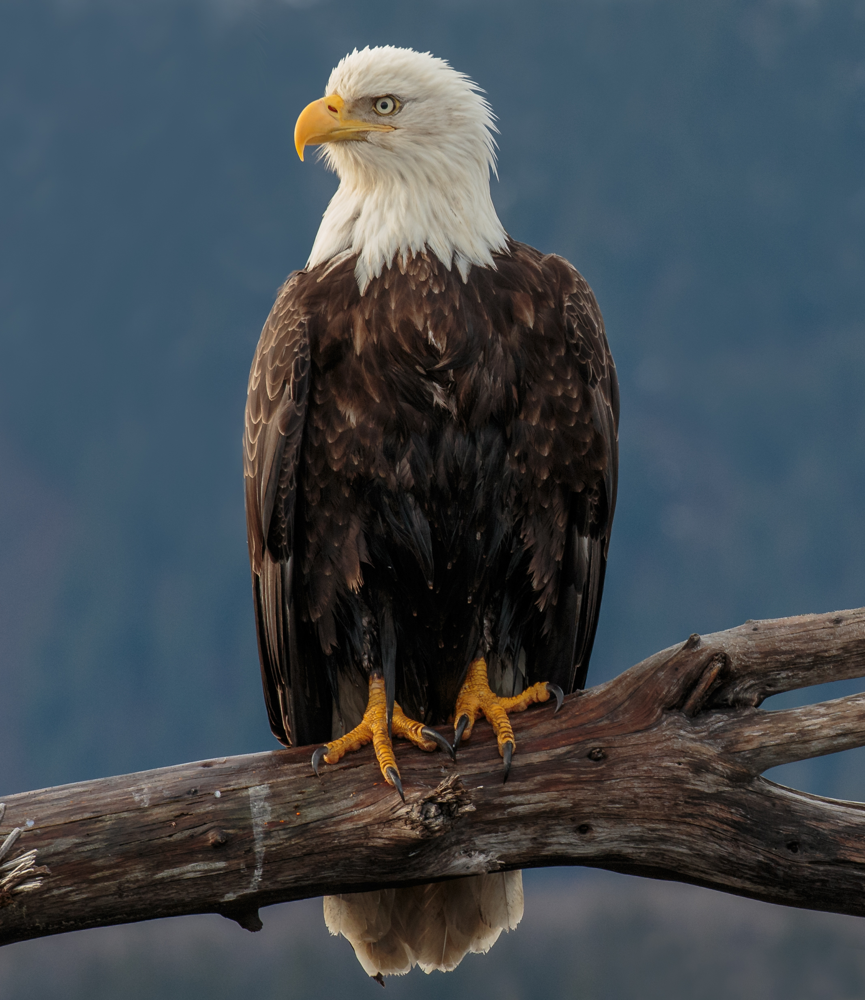
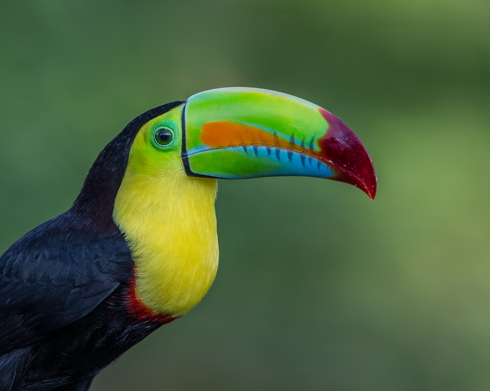
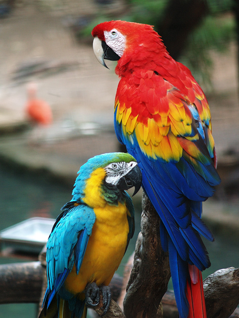
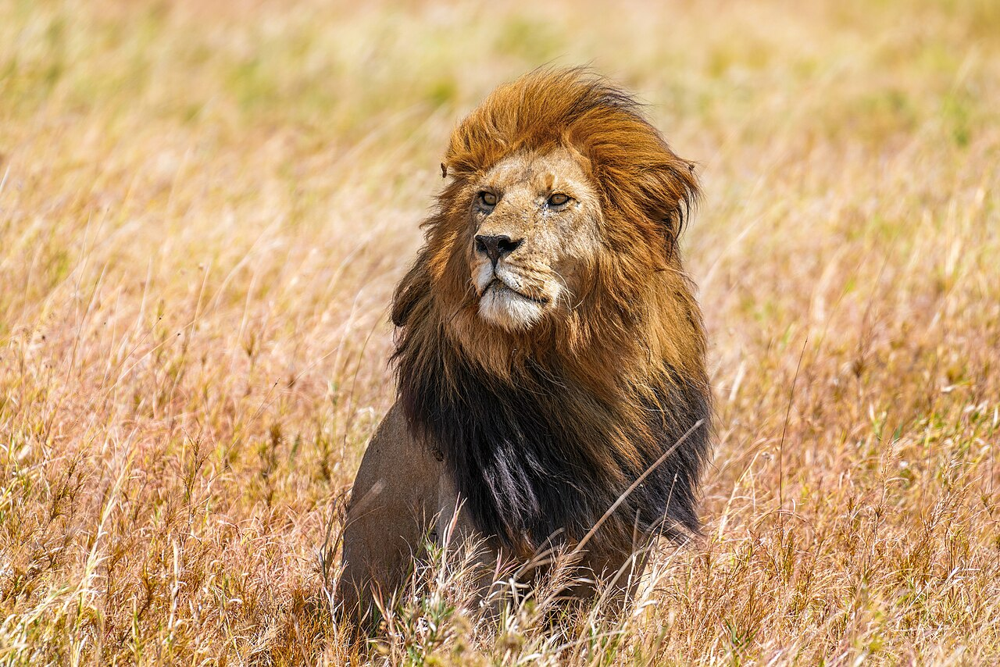
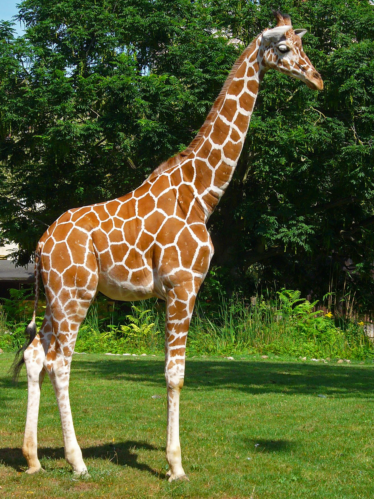
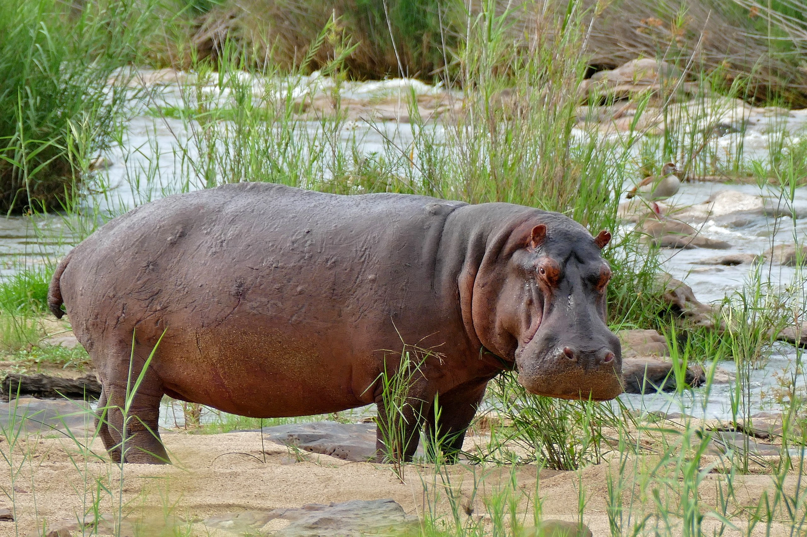

Zoológico El Amanecer
Entrada: $20.000
Reptiles
Iguana

Iguana: Es un reptil verde de cuerpo alargado con una cresta de espinas que recorre su espalda. Pasa el día trepada en las ramas de los árboles tomando el sol para regular su temperatura.
Tortuga

Tortuga: Destaca por su caparazón duro y pesado que la protege de los depredadores. Camina con lentitud en la tierra y es una excelente nadadora con una vida muy larga.
Camaleón

Camaleón: Este pequeño lagarto es famoso por cambiar el color de su piel para camuflarse. Mueve sus ojos de forma independiente y atrapa insectos con su lengua larga y pegajosa.
Aves
Águila Calva

Águila calva: Es un ave rapaz imponente con cabeza blanca, cuerpo marrón y un pico amarillo muy fuerte. Posee una vista extraordinaria que le permite cazar peces desde grandes alturas.
Tucán

Tucán: Llama la atención por su enorme y colorido pico, el cual es sorprendentemente ligero. Habita en las selvas tropicales y lo usa para alcanzar frutas en ramas delgadas.
Loro

Loro: Es un ave de plumaje brillante y colorido, conocida por su gran inteligencia. Utiliza su pico curvo para romper semillas y tiene la habilidad de imitar sonidos humanos.
Mamíferos
León

León: Conocido como el rey de la selva (aunque viva en la sabana), es un felino robusto con una melena imponente en los machos. Caza en equipo y su rugido fuerte se escucha a kilómetros.
Jirafa

Jirafa: Es el animal más alto del mundo gracias a sus patas largas y su cuello interminable. Su piel tiene manchas únicas y usa su lengua azul para arrancar hojas altas.
Hipopótamo

Hipopótamo: Es un mamífero enorme de piel gruesa que pasa el día sumergido en el agua para refrescarse. Aunque parece tranquilo, es un animal territorial, rápido y muy peligroso.